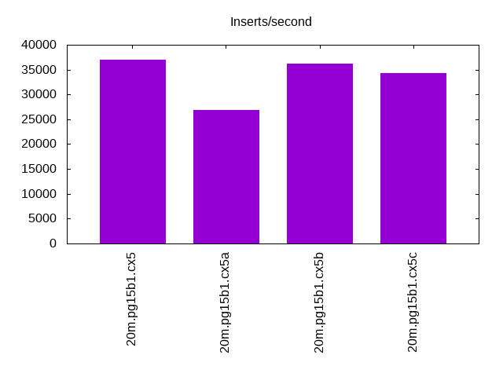
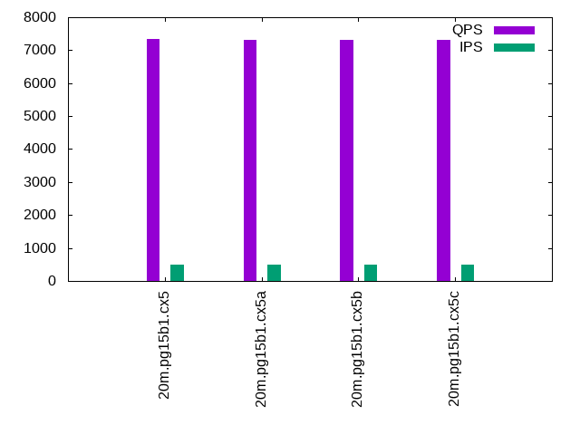

Introduction
This is a report for the insert benchmark with 20M docs and 1 client(s). It is generated by scripts (bash, awk, sed) and Tufte might not be impressed. An overview of the insert benchmark is here and a short update is here. Below, by DBMS, I mean DBMS+version.config. An example is my8020.c10b40 where my means MySQL, 8020 is version 8.0.20 and c10b40 is the name for the configuration file.
The test server is an Intel NUC with 4 cores, 16G RAM and a Samsung 970 EVO. More details are here. Clients and the DBMS share one server. The per-database configs are in the per-database subdirectories here.
The tested DBMS are:
- pg15b1.cx5 - Postgres 15beta1 and the cx5 config, wal_compression=off
- pg15b1.cx5a - Postgres 15beta1 and the cx5a config, wal_compression=pglz
- pg15b1.cx5b - Postgres 15beta1 and the cx5b config, wall_compression=lz4
- pg15b1.cx5c - Postgres 15beta1 and the cx5c config, wal_compression=zstd
Contents
- Summary
- l.i0: load without secondary indexes
- l.x: create secondary indexes
- l.i1: continue load after secondary indexes created
- q100.1: range queries with 100 insert/s per client
- q500.1: range queries with 500 insert/s per client
- q1000.1: range queries with 1000 insert/s per client
Summary
The numbers are inserts/s for l.i0 and l.i1, indexed docs (or rows) /s for l.x and queries/s for q*.2. The values are the average rate over the entire test for inserts (IPS) and queries (QPS). The range of values for IPS and QPS is split into 3 parts: bottom 25%, middle 50%, top 25%. Values in the bottom 25% have a red background, values in the top 25% have a green background and values in the middle have no color. A gray background is used for values that can be ignored because the DBMS did not sustain the target insert rate. Red backgrounds are not used when the minimum value is within 80% of the max value.
| dbms | l.i0 | l.x | l.i1 | q100.1 | q500.1 | q1000.1 |
|---|---|---|---|---|---|---|
| 20m.pg15b1.cx5 | 92592 | 304545 | 36968 | 7368 | 7346 | 7349 |
| 20m.pg15b1.cx5a | 92166 | 163415 | 26918 | 7456 | 7315 | 7216 |
| 20m.pg15b1.cx5b | 91743 | 300000 | 36166 | 7396 | 7314 | 7290 |
| 20m.pg15b1.cx5c | 92592 | 268000 | 34364 | 7440 | 7306 | 7253 |
This lists the average rate of inserts/s for the tests that do inserts concurrent with queries. For such tests the query rate is listed in the table above. The read+write tests are setup so that the insert rate should match the target rate every second. Cells that are not at least 95% of the target have a red background to indicate a failure to satisfy the target.
| dbms | q100.1 | q500.1 | q1000.1 |
|---|---|---|---|
| pg15b1.cx5 | 100 | 499 | 999 |
| pg15b1.cx5a | 100 | 499 | 999 |
| pg15b1.cx5b | 100 | 499 | 999 |
| pg15b1.cx5c | 100 | 500 | 999 |
| target | 100 | 500 | 1000 |
l.i0
l.i0: load without secondary indexes. Graphs for performance per 1-second interval are here.
Average throughput:

Insert response time histogram: each cell has the percentage of responses that take <= the time in the header and max is the max response time in seconds. For the max column values in the top 25% of the range have a red background and in the bottom 25% of the range have a green background. The red background is not used when the min value is within 80% of the max value.
| dbms | 256us | 1ms | 4ms | 16ms | 64ms | 256ms | 1s | 4s | 16s | gt | max |
|---|---|---|---|---|---|---|---|---|---|---|---|
| pg15b1.cx5 | 1.405 | 98.596 | 0.003 | ||||||||
| pg15b1.cx5a | 0.982 | 99.018 | 0.001 | 0.004 | |||||||
| pg15b1.cx5b | 0.614 | 99.385 | 0.002 | 0.007 | |||||||
| pg15b1.cx5c | 1.110 | 98.889 | 0.001 | 0.009 |
Performance metrics for the DBMS listed above. Some are normalized by throughput, others are not. Legend for results is here.
ips qps rps rmbps wps wmbps rpq rkbpq wpi wkbpi csps cpups cspq cpupq dbgb1 dbgb2 rss maxop p50 p99 tag 92592 0 0 0.0 60.8 39.5 0.000 0.000 0.001 0.437 11124 41.7 0.120 18 1.9 5.2 0.0 0.003 93233 75817 20m.pg15b1.cx5 92166 0 0 0.0 61.3 39.9 0.000 0.000 0.001 0.443 11136 41.2 0.121 18 1.9 5.2 0.0 0.004 92899 75620 20m.pg15b1.cx5a 91743 0 0 0.0 61.1 39.5 0.000 0.000 0.001 0.441 11047 42.2 0.120 18 1.9 5.2 0.0 0.007 92598 74176 20m.pg15b1.cx5b 92592 0 0 0.0 61.7 39.7 0.000 0.000 0.001 0.439 11103 41.6 0.120 18 1.9 5.2 0.0 0.009 92998 75350 20m.pg15b1.cx5c
l.x
l.x: create secondary indexes.
Average throughput:
Performance metrics for the DBMS listed above. Some are normalized by throughput, others are not. Legend for results is here.
ips qps rps rmbps wps wmbps rpq rkbpq wpi wkbpi csps cpups cspq cpupq dbgb1 dbgb2 rss maxop p50 p99 tag 304545 0 0 0.0 69.8 73.7 0.000 0.000 0.000 0.248 2033 24.6 0.007 3 3.7 8.6 0.0 0.002 NA NA 20m.pg15b1.cx5 163415 0 0 0.0 48.7 40.0 0.000 0.000 0.000 0.250 915 24.0 0.006 6 3.7 7.9 0.0 0.002 NA NA 20m.pg15b1.cx5a 300000 0 0 0.0 43.9 45.7 0.000 0.000 0.000 0.156 1482 24.0 0.005 3 3.7 8.0 0.0 0.002 NA NA 20m.pg15b1.cx5b 268000 0 0 0.0 37.9 39.2 0.000 0.000 0.000 0.150 1247 24.6 0.005 4 3.7 7.7 0.0 0.002 NA NA 20m.pg15b1.cx5c
l.i1
l.i1: continue load after secondary indexes created. Graphs for performance per 1-second interval are here.
Average throughput:
Insert response time histogram: each cell has the percentage of responses that take <= the time in the header and max is the max response time in seconds. For the max column values in the top 25% of the range have a red background and in the bottom 25% of the range have a green background. The red background is not used when the min value is within 80% of the max value.
| dbms | 256us | 1ms | 4ms | 16ms | 64ms | 256ms | 1s | 4s | 16s | gt | max |
|---|---|---|---|---|---|---|---|---|---|---|---|
| pg15b1.cx5 | 99.869 | 0.106 | 0.023 | 0.002 | 0.198 | ||||||
| pg15b1.cx5a | 96.144 | 2.687 | 1.168 | 0.037 | |||||||
| pg15b1.cx5b | 99.946 | 0.053 | 0.001 | nonzero | 0.699 | ||||||
| pg15b1.cx5c | 98.745 | 1.253 | 0.001 | 0.001 | nonzero | 0.739 |
Performance metrics for the DBMS listed above. Some are normalized by throughput, others are not. Legend for results is here.
ips qps rps rmbps wps wmbps rpq rkbpq wpi wkbpi csps cpups cspq cpupq dbgb1 dbgb2 rss maxop p50 p99 tag 36968 0 0 0.0 168.6 63.9 0.000 0.000 0.005 1.769 9370 36.1 0.253 39 8.2 21.2 0.0 0.198 38273 14332 20m.pg15b1.cx5 26918 0 0 0.0 113.7 41.5 0.000 0.000 0.004 1.580 6816 34.0 0.253 51 8.2 17.2 0.0 0.037 34126 1498 20m.pg15b1.cx5a 36166 0 0 0.0 168.2 57.1 0.000 0.000 0.005 1.617 9092 35.7 0.251 39 8.2 19.4 0.0 0.699 37758 15733 20m.pg15b1.cx5b 34364 0 0 0.0 218.6 50.3 0.000 0.000 0.006 1.499 8662 35.4 0.252 41 8.2 18.3 0.0 0.739 37559 5196 20m.pg15b1.cx5c
q100.1
q100.1: range queries with 100 insert/s per client. Graphs for performance per 1-second interval are here.
Average throughput:
Query response time histogram: each cell has the percentage of responses that take <= the time in the header and max is the max response time in seconds. For max values in the top 25% of the range have a red background and in the bottom 25% of the range have a green background. The red background is not used when the min value is within 80% of the max value.
| dbms | 256us | 1ms | 4ms | 16ms | 64ms | 256ms | 1s | 4s | 16s | gt | max |
|---|---|---|---|---|---|---|---|---|---|---|---|
| pg15b1.cx5 | 99.938 | 0.061 | 0.001 | 0.003 | |||||||
| pg15b1.cx5a | 99.937 | 0.063 | nonzero | nonzero | 0.007 | ||||||
| pg15b1.cx5b | 99.926 | 0.073 | 0.001 | nonzero | 0.005 | ||||||
| pg15b1.cx5c | 99.939 | 0.060 | nonzero | nonzero | 0.012 |
Insert response time histogram: each cell has the percentage of responses that take <= the time in the header and max is the max response time in seconds. For max values in the top 25% of the range have a red background and in the bottom 25% of the range have a green background. The red background is not used when the min value is within 80% of the max value.
| dbms | 256us | 1ms | 4ms | 16ms | 64ms | 256ms | 1s | 4s | 16s | gt | max |
|---|---|---|---|---|---|---|---|---|---|---|---|
| pg15b1.cx5 | 99.979 | 0.021 | 0.006 | ||||||||
| pg15b1.cx5a | 1.528 | 0.007 | 98.465 | 0.043 | |||||||
| pg15b1.cx5b | 46.514 | 53.486 | 0.009 | ||||||||
| pg15b1.cx5c | 0.264 | 99.729 | 0.007 | 0.017 |
Performance metrics for the DBMS listed above. Some are normalized by throughput, others are not. Legend for results is here.
ips qps rps rmbps wps wmbps rpq rkbpq wpi wkbpi csps cpups cspq cpupq dbgb1 dbgb2 rss maxop p50 p99 tag 100 7368 0 0.0 195.4 4.4 0.000 0.000 1.956 44.595 28312 26.1 3.843 142 8.3 10.8 0.0 0.003 7368 7272 20m.pg15b1.cx5 100 7456 0 0.0 198.4 3.4 0.000 0.000 1.988 34.961 28658 27.7 3.844 149 8.3 10.6 0.0 0.007 7448 7320 20m.pg15b1.cx5a 100 7396 0 0.0 194.8 3.7 0.000 0.000 1.952 37.694 28425 26.2 3.843 142 8.3 12.2 0.0 0.005 7400 7288 20m.pg15b1.cx5b 100 7440 0 0.0 194.7 3.2 0.000 0.000 1.949 32.906 28589 26.4 3.842 142 8.3 13.3 0.0 0.012 7432 7304 20m.pg15b1.cx5c
q500.1
q500.1: range queries with 500 insert/s per client. Graphs for performance per 1-second interval are here.
Average throughput:
Query response time histogram: each cell has the percentage of responses that take <= the time in the header and max is the max response time in seconds. For max values in the top 25% of the range have a red background and in the bottom 25% of the range have a green background. The red background is not used when the min value is within 80% of the max value.
| dbms | 256us | 1ms | 4ms | 16ms | 64ms | 256ms | 1s | 4s | 16s | gt | max |
|---|---|---|---|---|---|---|---|---|---|---|---|
| pg15b1.cx5 | 99.885 | 0.108 | 0.006 | nonzero | 0.005 | ||||||
| pg15b1.cx5a | 99.841 | 0.155 | 0.004 | 0.001 | 0.009 | ||||||
| pg15b1.cx5b | 99.872 | 0.123 | 0.005 | nonzero | 0.006 | ||||||
| pg15b1.cx5c | 99.865 | 0.131 | 0.003 | 0.001 | 0.012 |
Insert response time histogram: each cell has the percentage of responses that take <= the time in the header and max is the max response time in seconds. For max values in the top 25% of the range have a red background and in the bottom 25% of the range have a green background. The red background is not used when the min value is within 80% of the max value.
| dbms | 256us | 1ms | 4ms | 16ms | 64ms | 256ms | 1s | 4s | 16s | gt | max |
|---|---|---|---|---|---|---|---|---|---|---|---|
| pg15b1.cx5 | 99.987 | 0.013 | 0.015 | ||||||||
| pg15b1.cx5a | 17.046 | 82.954 | 0.044 | ||||||||
| pg15b1.cx5b | 86.944 | 13.056 | 0.008 | ||||||||
| pg15b1.cx5c | 0.213 | 99.786 | 0.001 | 0.025 |
Performance metrics for the DBMS listed above. Some are normalized by throughput, others are not. Legend for results is here.
ips qps rps rmbps wps wmbps rpq rkbpq wpi wkbpi csps cpups cspq cpupq dbgb1 dbgb2 rss maxop p50 p99 tag 499 7346 0 0.0 375.6 12.4 0.000 0.000 0.752 25.336 28345 26.5 3.859 144 9.7 13.3 0.0 0.005 7352 7226 20m.pg15b1.cx5 499 7315 0 0.0 368.9 9.7 0.000 0.000 0.739 19.801 28254 32.1 3.862 176 9.7 11.8 0.0 0.009 7320 7192 20m.pg15b1.cx5a 499 7314 0 0.0 370.0 10.0 0.000 0.000 0.741 20.451 28205 26.8 3.856 147 9.7 12.2 0.0 0.006 7320 7208 20m.pg15b1.cx5b 500 7306 0 0.0 363.2 8.7 0.000 0.000 0.727 17.926 28172 27.9 3.856 153 9.7 11.5 0.0 0.012 7304 7183 20m.pg15b1.cx5c
q1000.1
q1000.1: range queries with 1000 insert/s per client. Graphs for performance per 1-second interval are here.
Average throughput:
Query response time histogram: each cell has the percentage of responses that take <= the time in the header and max is the max response time in seconds. For max values in the top 25% of the range have a red background and in the bottom 25% of the range have a green background. The red background is not used when the min value is within 80% of the max value.
| dbms | 256us | 1ms | 4ms | 16ms | 64ms | 256ms | 1s | 4s | 16s | gt | max |
|---|---|---|---|---|---|---|---|---|---|---|---|
| pg15b1.cx5 | 99.823 | 0.163 | 0.014 | nonzero | 0.005 | ||||||
| pg15b1.cx5a | 99.721 | 0.269 | 0.010 | 0.001 | 0.010 | ||||||
| pg15b1.cx5b | 99.787 | 0.203 | 0.010 | nonzero | 0.006 | ||||||
| pg15b1.cx5c | 99.773 | 0.219 | 0.007 | 0.001 | 0.008 |
Insert response time histogram: each cell has the percentage of responses that take <= the time in the header and max is the max response time in seconds. For max values in the top 25% of the range have a red background and in the bottom 25% of the range have a green background. The red background is not used when the min value is within 80% of the max value.
| dbms | 256us | 1ms | 4ms | 16ms | 64ms | 256ms | 1s | 4s | 16s | gt | max |
|---|---|---|---|---|---|---|---|---|---|---|---|
| pg15b1.cx5 | 98.258 | 1.726 | 0.016 | 0.035 | |||||||
| pg15b1.cx5a | 0.008 | 63.679 | 36.313 | 0.063 | |||||||
| pg15b1.cx5b | 97.458 | 2.529 | 0.013 | 0.037 | |||||||
| pg15b1.cx5c | 26.839 | 73.156 | 0.005 | 0.039 |
Performance metrics for the DBMS listed above. Some are normalized by throughput, others are not. Legend for results is here.
ips qps rps rmbps wps wmbps rpq rkbpq wpi wkbpi csps cpups cspq cpupq dbgb1 dbgb2 rss maxop p50 p99 tag 999 7349 8 0.1 512.5 17.5 0.001 0.009 0.513 17.912 28485 27.2 3.876 148 12.0 16.7 0.0 0.005 7352 7224 20m.pg15b1.cx5 999 7216 6 0.1 502.8 14.4 0.001 0.008 0.503 14.773 27986 33.4 3.878 185 12.0 14.8 0.0 0.010 7224 7080 20m.pg15b1.cx5a 999 7290 8 0.1 504.4 14.9 0.001 0.009 0.505 15.262 28244 27.5 3.874 151 12.0 15.1 0.0 0.006 7288 7160 20m.pg15b1.cx5b 999 7253 6 0.1 499.4 13.4 0.001 0.008 0.500 13.745 28091 28.9 3.873 159 12.0 14.3 0.0 0.008 7256 7128 20m.pg15b1.cx5c
l.i0
l.i0: load without secondary indexes
Performance metrics for all DBMS, not just the ones listed above. Some are normalized by throughput, others are not. Legend for results is here.
ips qps rps rmbps wps wmbps rpq rkbpq wpi wkbpi csps cpups cspq cpupq dbgb1 dbgb2 rss maxop p50 p99 tag 92592 0 0 0.0 60.8 39.5 0.000 0.000 0.001 0.437 11124 41.7 0.120 18 1.9 5.2 0.0 0.003 93233 75817 20m.pg15b1.cx5 92166 0 0 0.0 61.3 39.9 0.000 0.000 0.001 0.443 11136 41.2 0.121 18 1.9 5.2 0.0 0.004 92899 75620 20m.pg15b1.cx5a 91743 0 0 0.0 61.1 39.5 0.000 0.000 0.001 0.441 11047 42.2 0.120 18 1.9 5.2 0.0 0.007 92598 74176 20m.pg15b1.cx5b 92592 0 0 0.0 61.7 39.7 0.000 0.000 0.001 0.439 11103 41.6 0.120 18 1.9 5.2 0.0 0.009 92998 75350 20m.pg15b1.cx5c
l.x
l.x: create secondary indexes
Performance metrics for all DBMS, not just the ones listed above. Some are normalized by throughput, others are not. Legend for results is here.
ips qps rps rmbps wps wmbps rpq rkbpq wpi wkbpi csps cpups cspq cpupq dbgb1 dbgb2 rss maxop p50 p99 tag 304545 0 0 0.0 69.8 73.7 0.000 0.000 0.000 0.248 2033 24.6 0.007 3 3.7 8.6 0.0 0.002 NA NA 20m.pg15b1.cx5 163415 0 0 0.0 48.7 40.0 0.000 0.000 0.000 0.250 915 24.0 0.006 6 3.7 7.9 0.0 0.002 NA NA 20m.pg15b1.cx5a 300000 0 0 0.0 43.9 45.7 0.000 0.000 0.000 0.156 1482 24.0 0.005 3 3.7 8.0 0.0 0.002 NA NA 20m.pg15b1.cx5b 268000 0 0 0.0 37.9 39.2 0.000 0.000 0.000 0.150 1247 24.6 0.005 4 3.7 7.7 0.0 0.002 NA NA 20m.pg15b1.cx5c
l.i1
l.i1: continue load after secondary indexes created
Performance metrics for all DBMS, not just the ones listed above. Some are normalized by throughput, others are not. Legend for results is here.
ips qps rps rmbps wps wmbps rpq rkbpq wpi wkbpi csps cpups cspq cpupq dbgb1 dbgb2 rss maxop p50 p99 tag 36968 0 0 0.0 168.6 63.9 0.000 0.000 0.005 1.769 9370 36.1 0.253 39 8.2 21.2 0.0 0.198 38273 14332 20m.pg15b1.cx5 26918 0 0 0.0 113.7 41.5 0.000 0.000 0.004 1.580 6816 34.0 0.253 51 8.2 17.2 0.0 0.037 34126 1498 20m.pg15b1.cx5a 36166 0 0 0.0 168.2 57.1 0.000 0.000 0.005 1.617 9092 35.7 0.251 39 8.2 19.4 0.0 0.699 37758 15733 20m.pg15b1.cx5b 34364 0 0 0.0 218.6 50.3 0.000 0.000 0.006 1.499 8662 35.4 0.252 41 8.2 18.3 0.0 0.739 37559 5196 20m.pg15b1.cx5c
q100.1
q100.1: range queries with 100 insert/s per client
Performance metrics for all DBMS, not just the ones listed above. Some are normalized by throughput, others are not. Legend for results is here.
ips qps rps rmbps wps wmbps rpq rkbpq wpi wkbpi csps cpups cspq cpupq dbgb1 dbgb2 rss maxop p50 p99 tag 100 7368 0 0.0 195.4 4.4 0.000 0.000 1.956 44.595 28312 26.1 3.843 142 8.3 10.8 0.0 0.003 7368 7272 20m.pg15b1.cx5 100 7456 0 0.0 198.4 3.4 0.000 0.000 1.988 34.961 28658 27.7 3.844 149 8.3 10.6 0.0 0.007 7448 7320 20m.pg15b1.cx5a 100 7396 0 0.0 194.8 3.7 0.000 0.000 1.952 37.694 28425 26.2 3.843 142 8.3 12.2 0.0 0.005 7400 7288 20m.pg15b1.cx5b 100 7440 0 0.0 194.7 3.2 0.000 0.000 1.949 32.906 28589 26.4 3.842 142 8.3 13.3 0.0 0.012 7432 7304 20m.pg15b1.cx5c
q500.1
q500.1: range queries with 500 insert/s per client
Performance metrics for all DBMS, not just the ones listed above. Some are normalized by throughput, others are not. Legend for results is here.
ips qps rps rmbps wps wmbps rpq rkbpq wpi wkbpi csps cpups cspq cpupq dbgb1 dbgb2 rss maxop p50 p99 tag 499 7346 0 0.0 375.6 12.4 0.000 0.000 0.752 25.336 28345 26.5 3.859 144 9.7 13.3 0.0 0.005 7352 7226 20m.pg15b1.cx5 499 7315 0 0.0 368.9 9.7 0.000 0.000 0.739 19.801 28254 32.1 3.862 176 9.7 11.8 0.0 0.009 7320 7192 20m.pg15b1.cx5a 499 7314 0 0.0 370.0 10.0 0.000 0.000 0.741 20.451 28205 26.8 3.856 147 9.7 12.2 0.0 0.006 7320 7208 20m.pg15b1.cx5b 500 7306 0 0.0 363.2 8.7 0.000 0.000 0.727 17.926 28172 27.9 3.856 153 9.7 11.5 0.0 0.012 7304 7183 20m.pg15b1.cx5c
q1000.1
q1000.1: range queries with 1000 insert/s per client
Performance metrics for all DBMS, not just the ones listed above. Some are normalized by throughput, others are not. Legend for results is here.
ips qps rps rmbps wps wmbps rpq rkbpq wpi wkbpi csps cpups cspq cpupq dbgb1 dbgb2 rss maxop p50 p99 tag 999 7349 8 0.1 512.5 17.5 0.001 0.009 0.513 17.912 28485 27.2 3.876 148 12.0 16.7 0.0 0.005 7352 7224 20m.pg15b1.cx5 999 7216 6 0.1 502.8 14.4 0.001 0.008 0.503 14.773 27986 33.4 3.878 185 12.0 14.8 0.0 0.010 7224 7080 20m.pg15b1.cx5a 999 7290 8 0.1 504.4 14.9 0.001 0.009 0.505 15.262 28244 27.5 3.874 151 12.0 15.1 0.0 0.006 7288 7160 20m.pg15b1.cx5b 999 7253 6 0.1 499.4 13.4 0.001 0.008 0.500 13.745 28091 28.9 3.873 159 12.0 14.3 0.0 0.008 7256 7128 20m.pg15b1.cx5c
l.i0
- l.i0: load without secondary indexes
- Legend for results is here.
- Each entry lists the percentage of responses that fit in that bucket (slower than max time for previous bucket, faster than min time for next bucket).
Insert response time histogram
256us 1ms 4ms 16ms 64ms 256ms 1s 4s 16s gt max tag 0.000 1.405 98.596 0.000 0.000 0.000 0.000 0.000 0.000 0.000 0.003 pg15b1.cx5 0.000 0.982 99.018 0.001 0.000 0.000 0.000 0.000 0.000 0.000 0.004 pg15b1.cx5a 0.000 0.614 99.385 0.002 0.000 0.000 0.000 0.000 0.000 0.000 0.007 pg15b1.cx5b 0.000 1.110 98.889 0.001 0.000 0.000 0.000 0.000 0.000 0.000 0.009 pg15b1.cx5c
l.x
- l.x: create secondary indexes
- Legend for results is here.
- Each entry lists the percentage of responses that fit in that bucket (slower than max time for previous bucket, faster than min time for next bucket).
TODO - determine whether there is data for create index response time
l.i1
- l.i1: continue load after secondary indexes created
- Legend for results is here.
- Each entry lists the percentage of responses that fit in that bucket (slower than max time for previous bucket, faster than min time for next bucket).
Insert response time histogram
256us 1ms 4ms 16ms 64ms 256ms 1s 4s 16s gt max tag 0.000 0.000 99.869 0.106 0.023 0.002 0.000 0.000 0.000 0.000 0.198 pg15b1.cx5 0.000 0.000 96.144 2.687 1.168 0.000 0.000 0.000 0.000 0.000 0.037 pg15b1.cx5a 0.000 0.000 99.946 0.053 0.001 0.000 nonzero 0.000 0.000 0.000 0.699 pg15b1.cx5b 0.000 0.000 98.745 1.253 0.001 0.001 nonzero 0.000 0.000 0.000 0.739 pg15b1.cx5c
q100.1
- q100.1: range queries with 100 insert/s per client
- Legend for results is here.
- Each entry lists the percentage of responses that fit in that bucket (slower than max time for previous bucket, faster than min time for next bucket).
Query response time histogram
256us 1ms 4ms 16ms 64ms 256ms 1s 4s 16s gt max tag 99.938 0.061 0.001 0.000 0.000 0.000 0.000 0.000 0.000 0.000 0.003 pg15b1.cx5 99.937 0.063 nonzero nonzero 0.000 0.000 0.000 0.000 0.000 0.000 0.007 pg15b1.cx5a 99.926 0.073 0.001 nonzero 0.000 0.000 0.000 0.000 0.000 0.000 0.005 pg15b1.cx5b 99.939 0.060 nonzero nonzero 0.000 0.000 0.000 0.000 0.000 0.000 0.012 pg15b1.cx5c
Insert response time histogram
256us 1ms 4ms 16ms 64ms 256ms 1s 4s 16s gt max tag 0.000 0.000 99.979 0.021 0.000 0.000 0.000 0.000 0.000 0.000 0.006 pg15b1.cx5 0.000 0.000 1.528 0.007 98.465 0.000 0.000 0.000 0.000 0.000 0.043 pg15b1.cx5a 0.000 0.000 46.514 53.486 0.000 0.000 0.000 0.000 0.000 0.000 0.009 pg15b1.cx5b 0.000 0.000 0.264 99.729 0.007 0.000 0.000 0.000 0.000 0.000 0.017 pg15b1.cx5c
q500.1
- q500.1: range queries with 500 insert/s per client
- Legend for results is here.
- Each entry lists the percentage of responses that fit in that bucket (slower than max time for previous bucket, faster than min time for next bucket).
Query response time histogram
256us 1ms 4ms 16ms 64ms 256ms 1s 4s 16s gt max tag 99.885 0.108 0.006 nonzero 0.000 0.000 0.000 0.000 0.000 0.000 0.005 pg15b1.cx5 99.841 0.155 0.004 0.001 0.000 0.000 0.000 0.000 0.000 0.000 0.009 pg15b1.cx5a 99.872 0.123 0.005 nonzero 0.000 0.000 0.000 0.000 0.000 0.000 0.006 pg15b1.cx5b 99.865 0.131 0.003 0.001 0.000 0.000 0.000 0.000 0.000 0.000 0.012 pg15b1.cx5c
Insert response time histogram
256us 1ms 4ms 16ms 64ms 256ms 1s 4s 16s gt max tag 0.000 0.000 99.987 0.013 0.000 0.000 0.000 0.000 0.000 0.000 0.015 pg15b1.cx5 0.000 0.000 0.000 17.046 82.954 0.000 0.000 0.000 0.000 0.000 0.044 pg15b1.cx5a 0.000 0.000 86.944 13.056 0.000 0.000 0.000 0.000 0.000 0.000 0.008 pg15b1.cx5b 0.000 0.000 0.213 99.786 0.001 0.000 0.000 0.000 0.000 0.000 0.025 pg15b1.cx5c
q1000.1
- q1000.1: range queries with 1000 insert/s per client
- Legend for results is here.
- Each entry lists the percentage of responses that fit in that bucket (slower than max time for previous bucket, faster than min time for next bucket).
Query response time histogram
256us 1ms 4ms 16ms 64ms 256ms 1s 4s 16s gt max tag 99.823 0.163 0.014 nonzero 0.000 0.000 0.000 0.000 0.000 0.000 0.005 pg15b1.cx5 99.721 0.269 0.010 0.001 0.000 0.000 0.000 0.000 0.000 0.000 0.010 pg15b1.cx5a 99.787 0.203 0.010 nonzero 0.000 0.000 0.000 0.000 0.000 0.000 0.006 pg15b1.cx5b 99.773 0.219 0.007 0.001 0.000 0.000 0.000 0.000 0.000 0.000 0.008 pg15b1.cx5c
Insert response time histogram
256us 1ms 4ms 16ms 64ms 256ms 1s 4s 16s gt max tag 0.000 0.000 98.258 1.726 0.016 0.000 0.000 0.000 0.000 0.000 0.035 pg15b1.cx5 0.000 0.000 0.008 63.679 36.313 0.000 0.000 0.000 0.000 0.000 0.063 pg15b1.cx5a 0.000 0.000 97.458 2.529 0.013 0.000 0.000 0.000 0.000 0.000 0.037 pg15b1.cx5b 0.000 0.000 26.839 73.156 0.005 0.000 0.000 0.000 0.000 0.000 0.039 pg15b1.cx5c